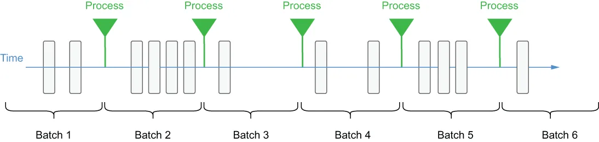

One technique that was introduced to address the processing latency that plagued these traditional batch processing engines was to dramatically reduce either the batch size or the processing interval. In micro-batch processing, newly arriving data elements are still collected into batches, as shown in figure 4.1, but the size of the batches is dramatically reduced by adjusting the time interval to a few seconds. Even though the processing may occur more frequently, the data is still processed one batch at a time, so it is often referred to as micro-batching and is used by such processing frameworks as Spark Streaming.
为了解决困扰这些传统批处理引擎的处理延迟问题，人们引入了一种技术：大幅缩小批的大小或处理间隔。在微批处理中，新到达的数据元素仍然会被收集成批，如图 4.1 所示，但通过把时间间隔调整到几秒，批的规模被大幅缩小了。尽管处理可能变得更频繁，数据仍然是一次处理一批，因此它常被称为微批处理，并被 Spark Streaming 等处理框架所采用。

Figure 4.1 With batch processing, the message processing occurs at predetermined intervals and follows a consistent cadence.
图 4.1 采用批处理时，消息处理在预先确定的时间间隔上发生，并遵循一个固定的节奏。
While this approach does decrease the processing latency between when a data element arrives and when it is processed, it still introduces artificial delays into the process that compound as the complexity of the data pipeline increases. Consequently, even micro-batch processing applications cannot rely on consistent response times and need to account for delays between when the data arrives and when it is processed. This makes micro-batch processing more appropriate for use cases that do not require having the most recent data and can tolerate slower response times, whereas stream native processing is better suited for use cases that require near real-time responsiveness, such as fraud detection, real-time pricing, and system monitoring.
虽然这种做法确实缩短了数据元素从到达至被处理之间的处理延迟，但它仍然在该过程中引入了人为的延迟，并且这些延迟会随着数据管道复杂度的增加而叠加。因此，即便是微批处理应用也无法依赖一致的响应时间，必须把数据到达与被处理之间的延迟考虑在内。这使得微批处理更适合那些不要求持有最新数据、且能容忍较慢响应时间的用例；而流原生处理则更适合那些要求近实时响应的用例，例如欺诈检测、实时定价和系统监控。